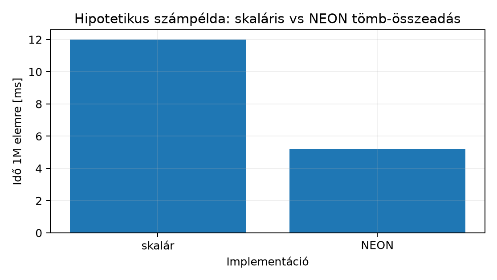

Az előző alfejezetben megírtuk a NEON-átiratot: a fő ciklus elemes lépésekben dolgozik, a maradékot skalárisan fejezzük be. Ettől a kód elvileg gyorsabb. A mérnöki kérdés azonban nem az, hogy „gyorsabb-e”, hanem az, hogy mennyivel, milyen feltételek mellett, és hol van az a pont, ahol a többletkomplexitás nem térül meg. Egy teljesítménykritikus modulban ez a döntés közvetlenül mérnöki: ha egy kernel a futásidő 8%-át adja, és a vektorizációval annak felét megnyerjük, a teljes programra eső nyereség néhány százalék — miközben a kód karbantarthatósága és hordozhatósága romlik.
Ehhez két dolog kell. Egyrészt egy reprodukálható mérési
eljárás, amely azonos bemeneten, ismételt futással, szóródást
is közölve hasonlítja össze a két változatot. Másrészt egy
egyszerű modell, amelyhez a mért értéket viszonyítani
lehet — különben nem tudjuk megmondani, hogy egy 2,3-szeres gyorsulás jó
eredmény vagy figyelmeztetés. Ezt az Amdahl-törvény adja, a
feltevéseivel együtt. A mérést a debugging és
instrumentáció fejezet CLOCK_MONOTONIC-alapú
mintavételi vázára építjük; a részletes ciklusszám-elemzést a teljesítmény-tudatos fejezet folytatja.
Legyen a skaláris változat futásideje és a NEON-változaté, azonos bemeneten, azonos mérési intervallummal. A gyorsulás (speedup):
A vektorizálható hányad (vectorizable fraction) : a skaláris változat futásidejének az a része, amelyre a vektorizálás hat. Nem utasításszám-hányad: az eltérő késleltetésű, egymással átfedve végrehajtott utasítások darabszámából nem következik, mennyi időt visz el a vektorizálható rész. A maradék időhányad olyan munka, amelyre a vektorizálás nem hat.
Az Amdahl-modell adott és a vektorizált részre vonatkozó gyorsítási tényező mellett:
A képlet akkor érvényes, ha a két részidő rögzített, és a
vektorizálás csak a
részt gyorsítja, azon belül egyenletesen
-szeresen.
Az
ebben az alfejezetben egyszerű modellfeltevés: azt mondja ki,
hogy a vektoros rész ideje pontosan a sávok számával osztódik (128 bites
float32x4_t esetén 4 sáv). Ez nem az ISA-ból következő
felső korlát. Abból, hogy négy float fér egy
vektorregiszterbe, nem következik a mért
általános érvénye: a vektoros ciklusban megváltozik a ciklusvezérlés
aránya, az utasításkibocsátás és a függőségi láncok hatása is. A
tényleges
ezért lehet 4 alatt (például ha a memóriarendszer korlátoz) és elvben 4
felett is (például ha a skaláris változatot elemenként a ciklusvezérlés
vagy egy függőségi lánc fogta vissza).
Munkakönyvtár: ~/arm-labor/a64/a048/ —
az alfejezet minden laborfájlja ide kerül, és minden parancs innen
futtatandó (a könyvtárrendet a Labor-alapkörnyezet alfejezet írja le).
mkdir -p ~/arm-labor/a64/a048
cd ~/arm-labor/a64/a048A mérés elve: azonos bemenet, a méréstől külön korrektségi ellenőrzés kernelenként, melegítés, ismételt futás váltakozó sorrendben, valamint medián és szóródás (interkvartilis terjedelem, IQR) közlése. A váz négy lépése:
A deklarációk saját fejlécbe kerülnek. A függvénynevekben az
f32 megkülönbözteti őket az előző
alfejezet add_i32_* függvényeitől, amelyek más
elemtípussal és más paramétersorrenddel dolgoznak:
/* lab-a048-add-f32.h */
#ifndef LAB_A048_ADD_F32_H
#define LAB_A048_ADD_F32_H
#include <stddef.h>
/* dst[i] = a[i] + b[i] (float), 0 <= i < n.
* Paramétersorrend: dst, a, b, n — eltér az a047 add_i32_* függvényeitől.
* Előfeltétel: a tömbök legalább n eleműek; dst nem fedi át részlegesen a-t vagy b-t. */
void add_f32_scalar(float *dst, const float *a, const float *b, size_t n);
void add_f32_neon (float *dst, const float *a, const float *b, size_t n);
#endif/* lab-a048-bench.c */
#define _GNU_SOURCE
#include <math.h>
#include <stdio.h>
#include <stdint.h>
#include <stdlib.h>
#include <time.h>
#include "lab-a048-add-f32.h"
#ifndef N
#define N (1u << 20) /* 1 048 576 float = 4 MiB tömbönként */
#endif
#define WARMUP 3 /* kernelenként, nem mért futások */
#define REPS 31 /* páratlan, hogy a medián egyértelmű legyen */
typedef void lab_kernel(float *dst, const float *a, const float *b, size_t n);
/* aligned_alloc: a méret a 64 többszöröse legyen (C11); a logikai elemszám n marad.
* n == 0 esetén is foglal 64 bájtot (dokumentált minimális memóriahasználat). */
static float *alloc_f32(size_t n) {
if (n > (SIZE_MAX - 63) / sizeof(float)) return NULL; /* size_t túlcsordulás */
size_t bytes = (n * sizeof(float) + 63) & ~(size_t)63;
return aligned_alloc(64, bytes ? bytes : 64);
}
static double now_ms(void) {
struct timespec ts;
/* a043 mintája */
if (clock_gettime(CLOCK_MONOTONIC, &ts) != 0) { perror("clock_gettime"); exit(2); }
return ts.tv_sec * 1000.0 + ts.tv_nsec / 1e6;
}
static int cmp_double(const void *p, const void *q) {
double a = *(const double *)p, b = *(const double *)q;
return (a > b) - (a < b);
}
/* Őrérték: NaN-nal töltött pufferben egy ki nem írt elem sem mehet át. */
static void fill_nan(float *d, size_t n) {
for (size_t i = 0; i < n; ++i) d[i] = NAN;
}
/* Indexenként eltérő, vegyes előjelű, pontosan reprezentálható bemenet:
* a lane-csere, a[i+1] olvasás, konstans kimenet és az elhagyott tail eltérést ad. */
static float va(size_t i) { return (float)((int)(i % 13) - 6) * 0.5f; }
static float vb(size_t i) { return (float)((int)(i % 7) - 3) * 0.25f + (float)(i % 5); }
static void fill_in(float *a, float *b, size_t n) {
for (size_t i = 0; i < n; ++i) { a[i] = va(i); b[i] = vb(i); }
}
/* Külön referencia: d[i] == va(i) + vb(i) (az összeg pontos, így == összehasonlítható). */
static int check(const char *name, const float *d, size_t n) {
for (size_t i = 0; i < n; ++i) {
float want = va(i) + vb(i);
if (d[i] != want) {
printf("FAIL %s: d[%zu] = %g (vart: %g)\n", name, i, (double)d[i], (double)want);
return 0;
}
}
return 1;
}
/* Hosszsöprés őrértékkel: n = 0..17 és a 4-gyel nem osztható / határ menti hosszak.
* A kimenet utáni 4 elem NaN őrérték marad, a bemenet utáni elemek 1e30f csapdák. */
static int sweep(const char *name, lab_kernel *fn) {
static const size_t extra[] = { 31, 33, 63, 65, 1023, 1025, 4099 };
size_t cnt = 18 + sizeof extra / sizeof extra[0];
for (size_t k = 0; k < cnt; ++k) {
size_t n = k < 18 ? k : extra[k - 18];
float *a = malloc((n + 4) * sizeof(float)), *b = malloc((n + 4) * sizeof(float));
float *d = malloc((n + 4) * sizeof(float));
if (!a || !b || !d) { free(a); free(b); free(d); return 0; }
fill_in(a, b, n);
for (size_t i = n; i < n + 4; ++i) { a[i] = b[i] = 1e30f; d[i] = NAN; }
fill_nan(d, n);
fn(d, a, b, n);
int ok = check(name, d, n);
for (size_t i = n; ok && i < n + 4; ++i)
if (!isnan(d[i])) { printf("FAIL %s: n=%zu, a határon túli írás d[%zu]\n", name, n, i); ok = 0; }
if (!ok) printf(" (hibás hossz: n = %zu)\n", n);
free(a); free(b); free(d);
if (!ok) return 0;
}
return 1;
}
/* Medián és interkvartilis terjedelem (IQR), egyszerű rangalapú kvartilisekkel. */
static void stats(double *t, int n, double *med, double *iqr) {
qsort(t, (size_t)n, sizeof t[0], cmp_double);
*med = t[n / 2];
*iqr = t[(3 * n) / 4] - t[n / 4];
}
int main(void) {
lab_kernel *fn[2] = { add_f32_scalar, add_f32_neon };
const char *name[2] = { "add_f32_scalar", "add_f32_neon" };
float *a = alloc_f32(N);
float *b = alloc_f32(N);
float *d[2] = { alloc_f32(N), /* külön kimeneti */
alloc_f32(N) }; /* puffer kernelenként */
static double t[2][REPS];
int rc = 1;
if (!a || !b || !d[0] || !d[1]) goto out;
fill_in(a, b, N);
/* 1. Korrektség a méréstől külön: mindkét kernel saját, NaN-nal töltött pufferbe ír. */
for (int k = 0; k < 2; ++k) {
if (!sweep(name[k], fn[k])) goto out;
fill_nan(d[k], N);
fn[k](d[k], a, b, N);
if (!check(name[k], d[k], N)) goto out;
}
printf("ellenorzes: %s OK, %s OK\n", name[0], name[1]);
/* 2. Melegítés: gyorsítótárak, laptábla, QEMU-kódfordítás. */
for (int w = 0; w < WARMUP; ++w)
for (int k = 0; k < 2; ++k) fn[k](d[k], a, b, N);
/* 3. Mérés váltakozó sorrendben: páros körben skalár–NEON, páratlanban NEON–skalár. */
for (int k = 0; k < 2; ++k) fill_nan(d[k], N);
for (int r = 0; r < REPS; ++r)
for (int j = 0; j < 2; ++j) {
int k = j ^ (r & 1);
double t0 = now_ms();
fn[k](d[k], a, b, N); /* csak a kernel van a mérésen belül */
t[k][r] = now_ms() - t0;
}
/* 4. A mért futások eredménye is helyes-e? */
for (int k = 0; k < 2; ++k)
if (!check(name[k], d[k], N)) goto out;
double med[2], iqr[2];
for (int k = 0; k < 2; ++k) stats(t[k], REPS, &med[k], &iqr[k]);
if (med[0] <= 0 || med[1] <= 0) { rc = 2; goto out; }
for (int k = 0; k < 2; ++k)
printf("%-15s median %8.3f ms IQR %6.3f ms\n", name[k], med[k], iqr[k]);
printf("gyorsulas (median-arany): %.2fx\n", med[0] / med[1]);
rc = 0;
out:
free(a); free(b); free(d[0]); free(d[1]);
return rc;
}A két kernel az a047 vázát követi; itt a
teljes, önállóan összeszerelhető alak. Az
.ifdef LAB_BREAK_SCALAR ág az ellenpróbát szolgálja, normál
buildben nem fordul be:
// lab-a048-kernels.s (A64 ISA, AArch64)
.text
.globl add_f32_scalar
.type add_f32_scalar, %function
add_f32_scalar: // x0=dst, x1=a, x2=b, x3=n
cbz x3, 2f
mov x4, #0
1: ldr s0, [x1, x4, lsl #2]
ldr s1, [x2, x4, lsl #2]
.ifdef LAB_BREAK_SCALAR
fsub s0, s0, s1 // ELLENPRÓBA: szándékosan hibás eredmény
.else
fadd s0, s0, s1
.endif
str s0, [x0, x4, lsl #2]
add x4, x4, #1
cmp x4, x3
b.lo 1b
2: ret
.size add_f32_scalar, .-add_f32_scalar
.globl add_f32_neon
.type add_f32_neon, %function
add_f32_neon: // x0=dst, x1=a, x2=b, x3=n
lsr x5, x3, #2 // n/4
lsl x5, x5, #2 // n & ~3 : a 4-tel osztható határ
mov x4, #0
cbz x5, 2f
1: lsl x6, x4, #2 // j*4 bájt, külön címeltolás Q-hozzáféréshez
ldr q0, [x1, x6] // 4 float betöltése a-ból
ldr q1, [x2, x6] // 4 float betöltése b-ből
fadd v0.4s, v0.4s, v1.4s // sáv-párhuzamos összeadás
str q0, [x0, x6]
add x4, x4, #4
cmp x4, x5
b.lo 1b
2: cmp x4, x3
b.hs 4f
3: ldr s0, [x1, x4, lsl #2] // maradékciklus (n mod 4 elem)
ldr s1, [x2, x4, lsl #2]
fadd s0, s0, s1
str s0, [x0, x4, lsl #2]
add x4, x4, #1
cmp x4, x3
b.lo 3b
4: ret
.size add_f32_neon, .-add_f32_neon
.section .note.GNU-stack,"",%progbitsBuild és futtatás (target: qemu-user, cross-toolchain):
aarch64-linux-gnu-gcc -O2 -c lab-a048-kernels.s -o lab-a048-kernels.o
aarch64-linux-gnu-gcc -O2 -std=c17 -Wall -Wextra -static \
lab-a048-bench.c lab-a048-kernels.o -o lab-a048-bench
qemu-aarch64 ./lab-a048-bench ; echo "exit=$?"Hipotetikus számpélda a kimenet formájára (nem mért adat; a tényleges értékek host-, QEMU-verzió- és futásfüggők):
ellenorzes: add_f32_scalar OK, add_f32_neon OK
add_f32_scalar median 12.004 ms IQR 0.150 ms
add_f32_neon median 5.198 ms IQR 0.090 ms
gyorsulas (median-arany): 2.31x
exit=0Ellenpróba: hibás skaláris kernel. A teszt akkor ér
valamit, ha egy hibás kernelre megbukik. Fordítsuk újra a kerneleket
úgy, hogy a skaláris változat szándékosan FSUB-ot
végezzen:
aarch64-linux-gnu-gcc -O2 -Wa,--defsym,LAB_BREAK_SCALAR=1 \
-c lab-a048-kernels.s -o lab-a048-kernels-bad.o
aarch64-linux-gnu-gcc -O2 -std=c17 -Wall -Wextra -static \
lab-a048-bench.c lab-a048-kernels-bad.o -o lab-a048-bench-bad
qemu-aarch64 ./lab-a048-bench-bad ; echo "exit=$?"Várt kimenet: FAIL add_f32_scalar: d[0] = -1 (vart: 3),
majd exit=1; mérés nem indul. A régi, közös pufferes
elrendezés ugyanerre a hibára sikert jelentett volna.
Kritikus megjegyzés a QEMU-korlátról. A
qemu-aarch64 user-mode emuláció a guest-kódot
host-utasításokra fordítja, és nem modellezi hűen a valós
cache-hierarchiát, a memóriasávszélességet és a betöltési
késleltetéseket. Az itt kapott idő ezért emulációs idő, nem
target-ciklusszám. A QEMU-ban kapott arányból a fizikai
memóriasávszélességre nem lehet következtetni, és az sem mondható
általánosan, hogy a QEMU-arány a valós hardverhez képest jobb vagy
rosszabb lenne — az eltérés iránya sem garantált. Natív Raspberry Pi 4/5
alatt ugyanez a bináris valódi hardveres időt ad; a kettőt mindig külön
kell jelölni.
Levezetés. Jelölje a skaláris változat teljes futásidejét. Bontsuk fel két részre: a vektorizálható és a nem vektorizálható rész. A modell szerint a vektorizálás csak az első tagra hat, és ott -szeres gyorsulást ér el (azaz a vektorizált rész ideje -re csökken). Így
A gyorsulás a definíció szerint:
Két határeset érdekes:
Mért és ismert mellett a modellből visszaszámítható az az , amely a mérést reprodukálná:
Az a modellbe illesztett szám, nem mért mennyiség: értéke a feltételezett -n múlik, és az hányados nem mért sávkihasználtság. Abból, hogy , önmagában sem cache-, sem sávkihasználási diagnózis nem következik.
Hogyan becsülhető
?
Mivel
időhányad, utasításszámlálással (például objdump-listából)
nem határozható meg. Lehetséges módszerek: natív hardveren profilozó
(például perf record / perf report), amely
megmutatja, a futásidő mekkora része esik a kernel vektorizálható
ciklusára; vagy kísérleti felbontás, amelyben a nem vektorizálható részt
(például a maradékciklust vagy a környező kódot) külön mérjük, és
— ennek is van torzítása, mert a részek átfedve futhatnak. Ha egyik
módszer sem áll rendelkezésre,
feltételezett érték, és az erre épülő számítás matematikai
szemléltetés.
Az alábbi számítás hipotetikus számpélda: a fenti formátumú kimenet ms és ms értékét, valamint feltételezett -öt használ. Egyik szám sem mérés eredménye; a cél az Amdahl-modell kezelésének bemutatása.
| Változat | Idő [ms] | Gyorsulás | Megjegyzés |
|---|---|---|---|
Skaláris (add_f32_scalar) |
12,00 | 1,00× | hipotetikus számpélda, referencia |
NEON (add_f32_neon) |
5,20 | 2,31× | hipotetikus számpélda |
| Amdahl-modell, , | 3,45 | 3,48× | modellérték az feltevéssel |
| Amdahl-modell, , | 0,60 | 20,0× | a modell határértéke |
Az utolsó sor: ms, és .
A hipotetikus 2,31× a modell 3,48×-os értéke alatt van. A modellbe illesztett :
Ez a szám csak annyit mond: ha lenne, a vektorizált résznek kb. 2,5-szeresen kellene gyorsulnia ahhoz, hogy a megadott időket kapjuk. Más -vel más adódik (lásd az 1. feladatot), ezért belőle egyik lenti ok sem tekinthető igazoltnak.

Ha egy valódi mérés elmarad az modellértéktől, a következő okok jönnek szóba. Mindegyik hipotézis, amelyet natív hardveren végzett célzott méréssel kell igazolni (például -sweep a gyorsítótár-méretek körül, teljesítményszámlálók); a fenti hipotetikus számpéldából egyik sem következik.
ldr q / str q ugyanannyi
bájtot mozgat, mint a skaláris változat összesen. Ha a kernel
memória-kötött, a vektorizáció csak a számítási részt gyorsítja, a
betöltés/kiírás idejét nem. Nagyméretű tömbökön ez gyakori ok. Fontos:
ezt a hatást a QEMU nem modellezi megbízhatóan, ezért
QEMU-mérésből nem lehet rá következtetni.lsr/lsl
határszámítás és a maradékciklus egyszeri, fix költség. Nagy
-nél
elhanyagolható, kis
-nél
meghatározó.Mielőtt bármelyik okot vizsgálnánk, ellenőrizzük, hogy a mért bináris
valóban a kívánt kernelt futtatja: az
aarch64-linux-gnu-objdump -d --disassemble=add_f32_neon lab-a048-bench
kimenetében ldr q, fadd v0.4s és
str q utasításoknak kell lenniük. Ha nem ezek látszanak, a
mérés nem a NEON-kernelt méri (elavult objektum, rossz szimbólum, hibás
linkelés — lásd a 3. feladatot).
Nem minden vektorizálás éri meg. Négy tipikus eset:
volatile nyelő,
asm-akadály) és az eredményellenőrzést meg kell tartani, a
ciklusvezérlés overheadjét (üres kötegciklus) külön kell mérni és
közölni. Elfogadható a becslés, ha az ns/hívás a
ésszerű növelésére stabilizálódik; a jelentés a
-t
és a szóródást (IQR) is megadja, nem csak egy kis különbségből számolt
gyorsulási arányt.if-eket
tartalmaz, a sávon belüli szétválás (divergencia) miatt a NEON előny
eltűnik, és gyakran lassabb, mint a skaláris változat predikcióbarát
ága.Ezekben az esetekben a helyes döntés az, hogy mérünk, és a mérés alapján nem vektorizálunk.
(magyarázó, alapszint — cél: megértés-ellenőrzés) A hipotetikus számpélda gyorsulásához vezesd le a modellbe illesztett értékét , és feltevéssel. Mit mond az eredmény arról, mennyire függ az a feltételezett -től, és következik-e belőle bármilyen diagnózis?
(implementációs, középszint — cél: rutinépítés)
Módosítsd a mérési vázat úgy, hogy
-t
lépcsőzetesen növelje
-tól
-ig,
és minden
-re
írja ki a skaláris és NEON-időt. Készíts táblázatot, és állapítsd meg,
melyik
a vektorizáció megtérülési küszöbe ezen a hoston. A
lab-a048-sweep.c és lab-a048-sweep
build-célnevet használd.
(hibakeresési/mérési, középszint — cél:
rutinépítés) Egy újrafordítás után a NEON-változat mért ideje
gyanúsan közel van a skalárishoz. Kolléga szerint „a GCC a
-O2 szinten átírta a NEON-kódot”. Mutasd meg, hogy ez a
kézzel írt .s kernelre nem lehet igaz, majd keresd meg a
valódi okot aarch64-linux-gnu-nm,
aarch64-linux-gnu-objdump -d --disassemble=add_f32_neon és
a build-időbélyegek segítségével. Milyen hibák vezethetnek ahhoz, hogy a
mért bináris nem a várt kernelt futtatja?
(integráló, elmélyült — cél: fejezetek összekapcsolása:
Az AAPCS64 regiszterszerződés + korábbi n=0
határeset-fegyelem) Ellenőrizd objdump-pal, hogy
az add_f32_scalar és az add_f32_neon egyike
sem nyúl az AAPCS64 szerint megőrzendő (callee-saved) regiszterekhez —
X19–X28, illetve
V8–V15 alsó 64 bitje — anélkül, hogy
STP/LDP-vel visszaállítaná őket. Ezután kövesd
nyomon GDB-vel mindkét kernelt
bemenetre: igazold, hogy a RET előtt egyetlen
LDR/STR sem fut le. Mi történne, ha valamelyik
kernel elfelejtené ellenőrizni az
esetet, és már az első iterációban olvasna a (nem létező)
tömbelemből?
1. megoldás — Segítség. Az képletbe helyettesíts be sorban három -értéket, és figyeld, mennyit változik az eredmény.
1. megoldás — Teljes megoldás. mellett .
Ugyanabból az -ből a feltételezett -től függően más-más adódik; az tehát a modell paramétere, nem mérési eredmény. Egyik érték sem igazol memóriasávszélesség-, cache- vagy sávkihasználási problémát: ehhez -t időalapú módszerrel kellene megmérni (lásd „Hogyan becsülhető ?”), és a feltételezett okot célzott, natív hardveres méréssel kellene ellenőrizni. Az az modellfeltevéssel sem áll ellentmondásban, mert az csak modell, nem korlát.
2. megoldás — Segítség. A bench
függvény már megvan; csak egy külső ciklusba kell csomagolni, amely
-et
duplázza, és minden lépésben friss, igazított puffereket foglal. A
küszöböt vizuálisan ott keresd, ahol a két görbe metszi egymást.
2. megoldás — Teljes megoldás. A sweep-váz a
bench függvényt hívja meg növekvő
-re,
mindig friss (aligned) pufferekkel. A küszöb jellemzően ott van, ahol a
NEON-idő először lesz kisebb a skalárisnál; tipikusan néhány száz és
néhány ezer elem közé esik, de konkrét értéke host- és QEMU-verziófüggő,
ezért méréssel kell megállapítani. A helyes jelentés:
„ezen a hoston, ezzel a kernellel, ezen a bemeneteloszláson”. Nem
általános érvényű szám.
3. megoldás — Segítség. A .s fájlt a
GCC csak továbbadja az assemblernek — melyik lépésben lenne alkalma
bármit „átírni”? Utána nézd meg, honnan jön a binárisban az
add_f32_neon szimbólum.
3. megoldás — Teljes megoldás. A kézzel írt
lab-a048-kernels.s a GCC-től csak az assemblerhez jut: a
-O2 a C-forrásokra vonatkozik, a .s
utasításait sem nem vektorizálja, sem nem alakítja vissza skaláris
FADD-dá. Ha az add_f32_neon alatt a binárisban
nem fadd v0.4s áll, a valódi ok a buildben keresendő:
lab-a048-kernels.o
régebbi, mint a .s (a make függőségi sora
hiányzik, vagy kézi build után nem fordítottuk újra) —
ls -l --time-style=full-iso a két fájlra;.o (például az a047 könyvtárából
átmásolt fájl) definiál ugyanilyen nevű függvényt — ezt előzi meg a
különböző add_i32_*/add_f32_* név;
aarch64-linux-gnu-nm -A *.o | grep add_ megmutatja, melyik
objektum definiálja;-Wl,-Map=lab-a048.map linkertérkép megmutatja, honnan jött
a szimbólum.Javítás: tiszta újrafordítás (rm -f *.o lab-a048-bench,
majd a build), és az objdump -d --disassemble=add_f32_neon
ellenőrzése a mérés előtt. Az autovektorizáció vizsgálatához külön,
C-ben írt kernelek kellenek (például -O2 és
-O3 -fopt-info-vec összevetése); kézzel írt assemblyn ez a
kérdés nem értelmezhető.
4. megoldás — Segítség. Nézd meg, mely regisztereket
érinti ténylegesen a két kernel (a forrás alapján
X0–X6 és V0–V1), és
vesd össze az AAPCS64 regiszterszerződés
callee-saved listájával — esik-e bármelyik abba a tartományba? Az
nyomkövetéséhez tegyél töréspontot a kernel elejére és a
RET elé.
4. megoldás — Teljes megoldás. Az
add_f32_scalar és az add_f32_neon kizárólag
X0–X6 (az X6 a NEON-ág
bájteltolása) és V0–V1 regisztereket használ —
ezek egyike sem szerepel az AAPCS64 callee-saved listáján
(X19–X28, V8–V15),
ezért egyik kernelnek sem kell STP/LDP-vel
megőriznie semmit; az objdump -d kimenetében emiatt nem is
várunk ilyen utasítást. Az
esetben: az add_f32_scalar cbz x3, 2f-je
azonnal a ret-hez ugrik; az add_f32_neon-ban a
lsr/lsl 0-t számol ki x5-nek, a
cbz x5, 2f idevisz, majd a cmp x4, x3 /
b.hs 4f (0 és 0 egyenlő, a „higher or same” ilyenkor is
teljesül) szintén a ret-hez vezet — egyik ágban sem fut le
ldr/str. Ha ez a határellenőrzés hiányozna, az
első iteráció egy 0 méretű tömb nemlétező elemét olvasná: ez kisebb
léptékben ugyanaz a hibaosztály, amit a Záróprojekt I
n*n*sizeof(float)-túlcsordulás- és
n==0-ellenőrzése tárgyal (a057–a060) — ott a hiányzó korai kilépés egy egész
mátrixszorzó modult tenne memóriabiztonsági szempontból
megbízhatatlanná, itt egy két-utasításos kernelt.
A NEON-gyorsulás mérése azonos bemeneten, kernelenként külön kimeneti pufferrel és a méréstől elválasztott korrektségi ellenőrzéssel, melegítés után, váltakozó sorrendű ismételt futással, medián és IQR közlésével történik; a teszt értékét egy szándékosan hibás kernel ellenpróbája igazolja. Az Amdahl-modell alakban írja le a gyorsulást, ahol időhányad, nem utasításszám-hányad, és csak időalapú módszerrel becsülhető. A modell határértéke ; az egyszerű modellfeltevés, nem az ISA-ból következő felső korlát. A mért -ből visszaszámolt a feltételezett -n múlik, ezért nem mért sávkihasználtság, és diagnózist sem igazol. QEMU-ban a kapott idő emulációs idő; belőle fizikai memóriasávszélességre nem lehet következtetni. Kis tömböknél, sok elágazásnál és szétszórt hozzáférésnél a vektorizáció jellemzően nem térül meg — ezt is mérés dönti el.
Továbbhasznált definíciók: gyorsulás (speedup); vektorizálható hányad (vectorizable fraction), mint időhányad; Amdahl-modell.
A linkek és a dokumentumverziók közös állapota az Olvasói útmutató forrásállapot-táblájában van; itt csak az alfejezet saját megállapításai szerepelnek.
FADD (vector), LDR (immediate, SIMD&FP)
és STR (immediate, SIMD&FP) kódolásának, valamint a
q-regiszteres hozzáférés igazítási követelményeinek
elsődleges forrása. Ellenőrizve: a link él (a
developer.arm.com → support.arm.com
átirányítás megerősített); a fejezetszám és a kiadásbetű az Arm-oldalak
közös korlátja miatt nem ellenőrzött — a konkrét utasításkódolást a
laborban kézzel kell visszakeresni.master ághoz tartozó hivatalos
dokumentáció nem állít semmit a cache-hierarchia, a memóriasávszélesség
vagy a betöltési késleltetés modellezéséről — a fejezet lényegében a
rendszerhívás-fordítást és a szál-/memóriamodell host–guest eltéréseit
tárgyalja. A fenti, „QEMU nem modellezi hűen a cache-hierarchiát”
állítás ezért nem egy explicit QEMU-dokumentált korlátból, hanem a TCG
(Tiny Code Generator) ismert tervezési elvéből következik: funkcionális,
utasításszintű emulátor, nem cikluspontos szimulátor. A hivatkozott
dokumentáció emellett a master, nem egy konkrét kiadott
verzió állapotát tükrözi; a ténylegesen telepített (pl. Ubuntu 24.04
csomagolt) QEMU-verzió dokumentációja ettől eltérhet.objdump -d és a többi binutils-eszköz
referenciája. Tartalmilag ellenőrizve: a jelenlegi
kiadás binutils 2.47.disassemble és a távoli hibakeresés
referenciája. Tartalmilag ellenőrizve, de
verzió-megjegyzéssel: a „current” fejlesztői pillanatkép (közös
verziókorlát).-O2 és az AArch64-specifikus kapcsolók referenciája.
Tartalmilag ellenőrizve: a legújabb listázott kiadás
GCC 16.2. (Korábban ez a hivatkozás tévesen a Binutils-kézikönyvvel egy
közös link alá volt sorolva — a GCC a Binutilstól és a GDB-től független
projekt, külön dokumentációval.)Ellenőrzési hiányok, amelyek a fenti ellenőrzés után is ténylegesen fennmaradnak:
p = 0,95 vektorizálható hányad feltételezett érték,
az erre épülő számítás matematikai szemléltetés. A tényleges
időhányad, amelyet csak időalapú módszerrel (profilozás natív hardveren,
a részek külön mérése) lehet becsülni; utasításszámlálással nem.FAIL ellenpróbája) helyettesítő eszközlánccal —
zig cc (Clang, musl), Unicorn-alapú AArch64 user-mode
emulátorban, kisebb
-nel
— futtattuk; az ott kapott időket szándékosan nem közöljük, mert az
emulátor ideje semmilyen hardverre nem jellemző.gcc-aarch64-linux-gnu, qemu-user és
binutils pontos verziószáma ebben a munkafolyamatban nincs
lekérdezve; a fenti dokumentációs linkek ezért nem feltétlenül a
laborban ténylegesen használt verzióra mutatnak.